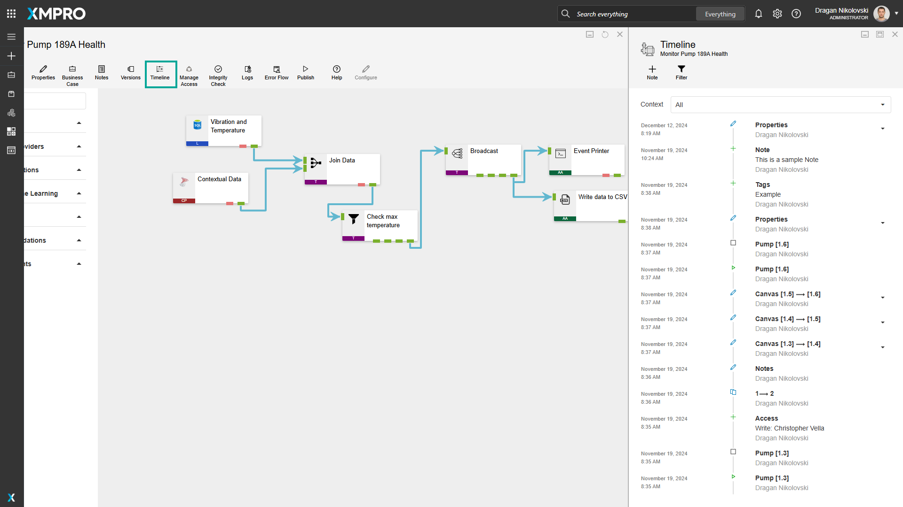

Use the Timeline
The Timeline displays a record of all the changes users have made to the Data Stream, including any notes made about particular issues. This can therefore be used as a collaboration tool to see the changes users make (even if it's only a single user), as well as notes about things that need to be addressed.
Note
It is recommended that you read the article listed below to improve your understanding of Timelines.
Viewing the Timeline
To open the Timeline, click "Timeline".

Adding a note
To add Notes to the Timeline, follow the steps below:
- Click "Timeline".
- Click the "Note" button.
- Type the notes you would like to add.
- Click "Ok".


Filtering the Timeline
To apply filtering on the Timeline, follow the steps below:
- Click on Filter.
- Select the type of items you would like to display.
- Click OK.
Version filtering the Timeline
To apply the version filtering on the Timeline, follow the steps below:
- Click on the Context dropdown.
- Select the Version that you would like to see the events.

Last modified: May 27, 2025